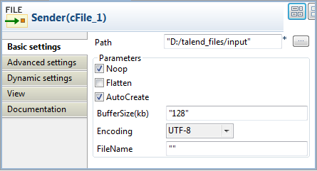
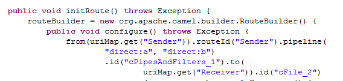
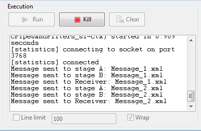

|
Famille de composant |
Routing | |
|
Fonction |
Le composant cPipesAndFilters divise le traitement d'un message en une séquence d'instances d'endpoints indépendants, pouvant être reliés entre eux. | |
|
Objectif |
Ce composant vous permet de diviser le routage d'un message en une série d'étapes de traitement indépendantes. | |
|
Basic settings |
URI list |
Cliquez sur le bouton [+] pour ajouter de nouvelles lignes pour les URIs identifiant les endpoints. |
|
Utilisation |
Le cPipesAndFilters est généralement utilisé au milieu d'une Route. | |
|
Limitation |
n/a | |
Dans ce scénario, un composant cPipesAndFilters est utilisé pour qu'un message envoyé d'un endpoint émetteur passe par une phase A et une phase B. Lorsque ces deux phases sont terminées, le message est routé vers un système de fichier, l'endpoint récepteur des messages.
Dans le dossier Messaging de la Palette, déposez deux composants cFile dans l'espace de modélisation graphique, un comme émetteur de message et l'autre comme récepteur de message et nommez-les respectivement Sender et Receiver afin de mieux identifier leur rôle dans la Route.
Du dossier Routing, déposez un composant cPipesAndFilters dans l'espace de modélisation graphique, entre les deux fichiers cFile.
Du dossier Messaging, déposez deux cMessagingEndpoint dans l'espace de modélisation graphique, un comme endpoint de l'étape A et l'autre comme endpoint de l'étape B. Nommez-les Stage_A et Stage_B respectivement, afin de mieux identifier leur rôle dans la Route.
Du dossier Processor, déposez trois cProcessor dans l'espace de modélisation graphique pour monitorer les messages reçus par les endpoints récepteur, de l'étape A et de l'étape B et nommez-les respectivement Monitor_Receiver, Monitor_stage_A, et Monitor_stage_B afin de mieux identifier leur rôle dans la Route.
Cliquez-droit sur le composant cFile nommé Sender, sélectionnez Row > Route dans le menu contextuel et cliquez sur le cPipesAndFilters.
Répétez cette étape pour configurer les autres liens Row > Route.
Double-cliquez sur le composant cFile nommé Sender pour ouvrir sa vue Basic settings.
Dans le champ Path, saisissez le chemin d'accès au dossier contenant les fichiers source ou parcourez votre système jusqu'à celui-ci.
Dans la liste Encoding, sélectionnez le type d'encodage de vos fichiers source. Laissez les autres paramètres tels qu'ils sont.
Répétez ces étapes pour configurer les chemins d'accès aux fichiers de sortie ainsi que le type d'encodage, dans la vue Basic settings du composant cFile nommé Receiver.
Double-cliquez sur le cPipesAndFilters pour ouvrir sa vue Basic settings.

Cliquez sur le bouton [+] afin d'ajouter deux lignes à la table URI list et saisissez
"direct:a"dans la première ligne, puis"direct:b"dans la seconde ligne pour définir les URIs de l'étape A et de l'étape B à travers lesquelles les messages vont passer.Double-cliquez sur le cMessagingEndpoint nommé Stage_A pour configurer les propriétés simples du composant, dans sa vue Basic settings et définir l'URI de l'étape A.

Répétez cette étape pour définir l'URI de l'étape B dans la vue Basic settings du cMessagingEndpoint nommé Stage_B.
Double-cliquez sur le composant cProcessor nommé Monitor_Receiver pour ouvrir sa vue Basic settings et personnaliser le code dans la zone Code pour afficher le nom des fichiers reçus par le récepteur, comme suit :
System.out.println("Message sent to Receiver: "+ exchange.getIn().getHeader("CamelFileName"));Répétez cette étape pour personnaliser le code dans les deux autres composants cProcessor afin d'afficher le nom des fichiers des messages reçus dans les étapes A et B, respectivement :
System.out.println("Message sent to stage A: "+ exchange.getIn().getHeader("CamelFileName"));System.out.println("Message sent to stage B: "+ exchange.getIn().getHeader("CamelFileName"));Appuyez sur Ctrl+S pour sauvegarder votre Route.
Cliquez sur l'onglet Code au bas de l'espace de modélisation graphique pour visualiser le code généré.
Comme affiché dans le code, les messages envoyés depuis (
from) l'émetteur (Sender) sont redirigés vers des endpoints identifiés pardirect:aetdirect:bpar lecPipesAndFilters_1avant d'être routés par le récepteur (Receiver).Appuyez sur F6 pour exécuter votre Route.
Résultat : La livraison du message passe par l'étape A (stage A) puis par l'étape B (stage B) avant d'atteindre le récepteur (Receiver).
